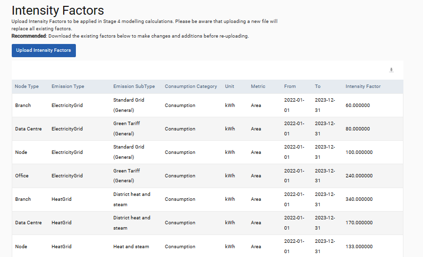

The modelling methodology uses a four-step methodology to plug data gaps, where a gap is defined as no uploads for an entire month in a given data source. Values can be modelled for electricity, fuel, heat and water data source types. Two pages can be used to manage the modelling process. These are found under Environment > Settings > Modelling. These pages include the Modelling Settings page and the Intensity Factors page.
The Modelling Settings page is where modelling can be set up. To turn modelling on, select ‘Yes’ in the Do you want to enable modelling? dropdown. In the Modelling Steps section the order in which methodologies are used to fill gaps can be specified per consumption type. The details of these methodologies are detailed below. Sufficient data must be available for modelled values to be produced. If there is insufficient data for a modelling step, the subsequent modelling step is used.
During the initial setup of modelling, the Model From field specifies the start date of modelling. If any changes are made to the modelling parameters, this field can also be used to rerun modelling, which is necessary to reflect these updates. To do so, enter the date from which you would like to recalculate modelled values into the Model From field, click Rerun Modelling, and then Update. This will remove any modelled data after the Model From date which will subsequently be recalculated overnight. This will not remove any modelled data from before the Model From date.
The normalization metric used in modelling calculations and the number of months the system should model into the future from today’s date can be specified in the Normalisation Metric and Modelling Forecast fields respectively. New modelled values are only generated if a data source is within the modelling view. This view can be specified using the View Category and View dropdowns. All changes to the modelling settings page are recorded. To view these changes please click the audit log icon to the right of the cancel button. Values cannot be modelled before the start date and after the end data of a node. In addition, modelling can be disabled for a node when it is created.
The methodologies available to model data are:
Previous year’s data
This methodology takes consumption data (actual or estimated) from the same time period in the previous year and applies that as the modelled consumption value.
12 month rolling average
This methodology can be applied if the location has actual data for at least seven of the 12 months preceding the month to be modelled. The value used for the missing month is the average of the previous 12 months data. When calculating this data the system evaluates the variance of this average value and if it exceeds 50%, the next step of modelling is used for this location.
Normalised intensity factor
This option can only be used if the location has at least one actual data entry for the previous 12 months and has normalisation data in the system for that month. For each of the last 12 months that have sufficient data, a 6-month running average intensity factor is calculated and stored against that month. Then the average of those intensity factors is calculated over the last 12 months, and this is multiplied by the location’s area to complete the modelling.
Client intensity factors
If a location has no actual data for any previous time period, then clients can define intensity metrics in the intensity metrics page, which is outlined below. When uploading intensity factors, please be aware that uploading a new file will replace all existing factors. Please download existing factors below to make changes and additions before reuploading. This methodology is only available for us if client specific intensity metrics have been defined and the associated nodes have normalization data for the time period which requires to be modelling.
Intensity factors can be specified in Environment > Settings > Modelling > Intensity Factors. Intensity factors can be specified for specific node type emission types, emission sub-types and for specific dates. New intensity factors can be uploaded using the Upload Intensity Factors button. Please note that uploading intensity factors will overwrite the existing table. To maintain your existing intensity factors, download the factors using the download button at the top right of the table, make edits or additions and reupload the file.

In all steps, the consumption is modelled and the associated GHG emissions are calculated from the consumption values and the SPM emissions factors database as for non-modelled data. If market-based emissions factors have been provided in Admin > Environment > Customisation > Emissions Factors > Market-Based then these factors will be used to calculate the market-based emissions for modelled consumption. If these are not available, residual mix factors are applied as priority two and location-based factors as priority three.